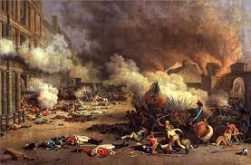

Esta sección examina los eventos, causas y consecuencias de un período de cambio social y político significativo en la historia. Puede incluir revoluciones políticas, sociales o industriales que hayan tenido un impacto duradero en la sociedad.
Una revolución representa un cambio profundo y abrupto en la estructura política, social, económica o cultural de una sociedad. Este proceso implica una transformación radical de las instituciones y relaciones de poder existentes. Las revoluciones pueden manifestarse en diversas formas, como revoluciones políticas que alteran el sistema de gobierno, revoluciones sociales que luchan por la igualdad y derechos civiles, revoluciones industriales que transforman las economías agrarias en economías industriales y revoluciones científicas que cambian fundamentalmente la comprensión del mundo.
Estos eventos históricos a menudo involucran movimientos sociales, protestas y, en algunos casos, conflictos armados. Las revoluciones también están marcadas por cambios ideológicos, desafiando las normas y creencias establecidas. Han tenido un impacto duradero en las sociedades humanas, dando forma a la historia y catalizando cambios significativos en diversos aspectos de la vida humana. Las revoluciones han sido motores clave de progreso y transformación en el mundo.